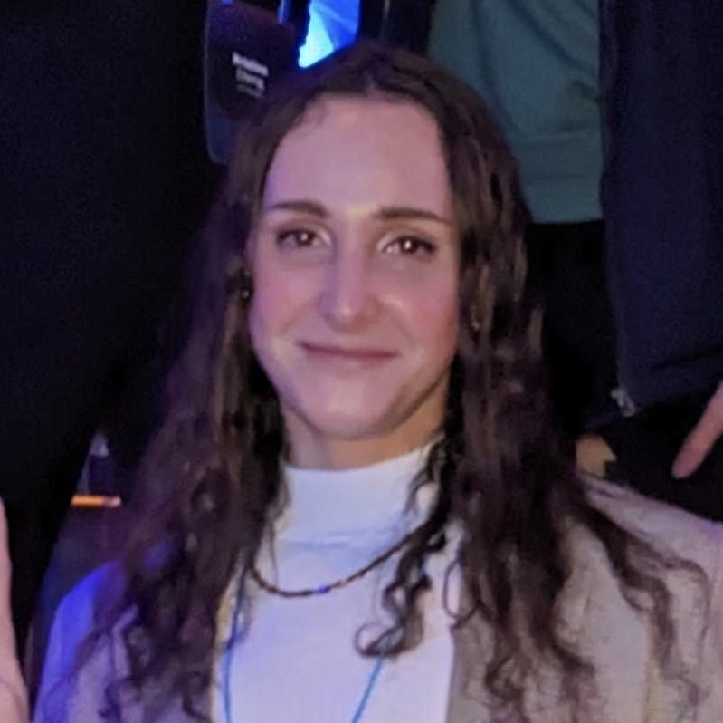

About Me

I am a data scientist in my mid-20s living and working in Brooklyn. I work in healthcare, but my interests are wide-ranging, and include anything from transportation to elections to tennis. I mostly work in Python, but I dabble in R and Julia, and I'm digging in to Scala at the moment.
In my free time, I love to cook, ride my bike, and practice making electronic music. Right now, I'm reading Slouching Towards Utopia (DeLong, 2022).
I'm passionate about making the future a better place for my trans siblings, and for all of us.
🏳️⚧️❤️